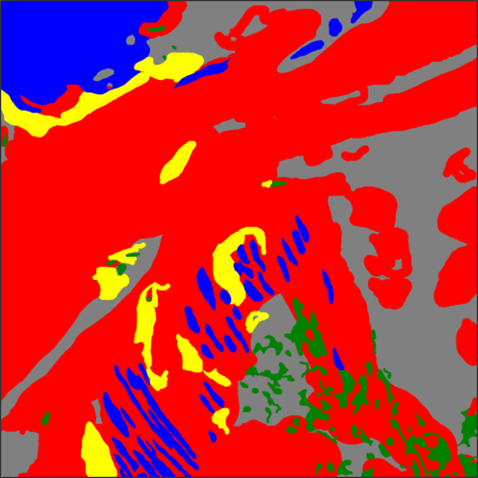
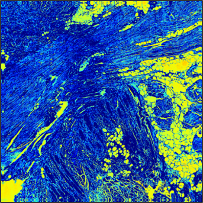

Building an AI School for Pathology
Part 2: The Backpropocalypse
Scott Doyle / scottdoy@buffalo.edu
Training AI Students
Petabyte Pedagogy
Why Is It Called a “Black Box”?
Teaching a School of AI Students
Solution: Interrogate the system to see what it’s “thinking”!
- Classification Output (What is this?)
- Intermediate Representation (How did you get your answer?)
- Active Learning (What are you confused about?)
- Error Analysis (What did you get wrong?)
- Generative Models (Draw a picture of what you think this is.)
Classification Output
What Is This?
Deep Learning for Pathology Segmentation
Patient Data: Small, use traditional ML
Pixel Data: Dense, use deep learning

Deep Learning for Pathology Segmentation

Deep Learning Segmentation


Deep Learning Segmentation
Deep Learning Segmentation
Intermediate Representations
How did you get your answer?
Semantic Segmentation Filters



Improving Training Efficiency: Active Learning
Random Learning (RL): Annotate everything!
Active Learning (AL): Only annotate the good stuff!
- Achieve higher performance using the same number of samples
- Use fewer annotated samples to hit a target performance
Active Learning Pipeline
Active Learning Pipeline
Progression of Random Training


Progression of Active Training
Double-Checking AI
Fragile Neural Networks
Fragile Neural Networks
Image normalization is critical for neural networks.
Small changes in image quality can drastically affect deep learning performance.
Serial sections help us explore fragility with a minimum of biological or technical variability.
Excellent test set for quality assurance!
Fragile Neural Networks

Fragile Neural Networks
Fragile Neural Networks
Importance of QA and Human-in-the-Loop
But what about the “generalization” of neural networks?
What other variation exists that we aren’t aware of a priori?
Generative Models: Draw Me A Picture
Variational Autoencoders and Generative Adversarial Networks can recreate images from a learned “latent space” of possible images in the domain.
Can we train a system to recognize medical image structures?

Nuclei GAN: Which is Real, Which is Fake?


Nuclei GAN: Learning to See
Concluding Remarks
AI is the Student, Not the Master
You can interrogate AI to understand it better.In training AI, you can develop a deeper understanding of your data by thorough review and classification.
By reviewing and re-training, you understand the AI “thought process” in a lot of detail, even if you don’t know the details of how the system is programmed.
A lot like students!
This is Just the Beginning
Interpretable AI is a huge field, the surface of which I have not scratched.
As we develop more efficient teaching methods, it helps us understand our students – human or AI – a little better.
It also leads us to more thorough understanding of the subject matter as well.